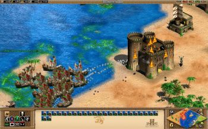

|

Age of Empires — серия исторических стратегий в реальном времени, начало которой было положено в 1997 году. Была выпущена фирмой Ensemble Studios, издавалась компанией Microsoft Game Studios. В серию входят восемь игр (из них четыре аддона) и стратегия Age of Mythology, которая считается потомком игры Age of Empires II, а также MMORTS Age of Empires Online.
По данным Microsoft, было продано около 15 миллионов копий игр из серии Age of Empires.
Хронология:
Следующие названия были опубликованы в серии на сегодняшний день:
• 1997 Age of Empires
• 1998 Age of Empires: The Rise of Rome.
• 1999 Age of Empires II: The Age of Kings
• 2000 Age of Empires II: The Conquerors
• 2002 Age of Mythology
• 2003 Age of Mythology: The Titans
• 2005 Age of Empires III
• 2005 Age of Empires II Mobile
• 2006 Age of Empires III: The WarChiefs
• 2007 Age of Empires III: The Asian Dynasties
• 2008 Age of Empires III Mobile
• 2011 Age of Empires Online
• 2013 Age of Empires II: HD Edition
• 2013 Age of Empires II: HD Edition - The Forgotten
• 2014 Age of Mythology: Extended Edition
• 2014 Age of Empires: Castle Siege
• 2015 Age of Empires II: HD Edition - The African Kingdoms
• 2016 Age of Mythology: Tale of the Dragon
|